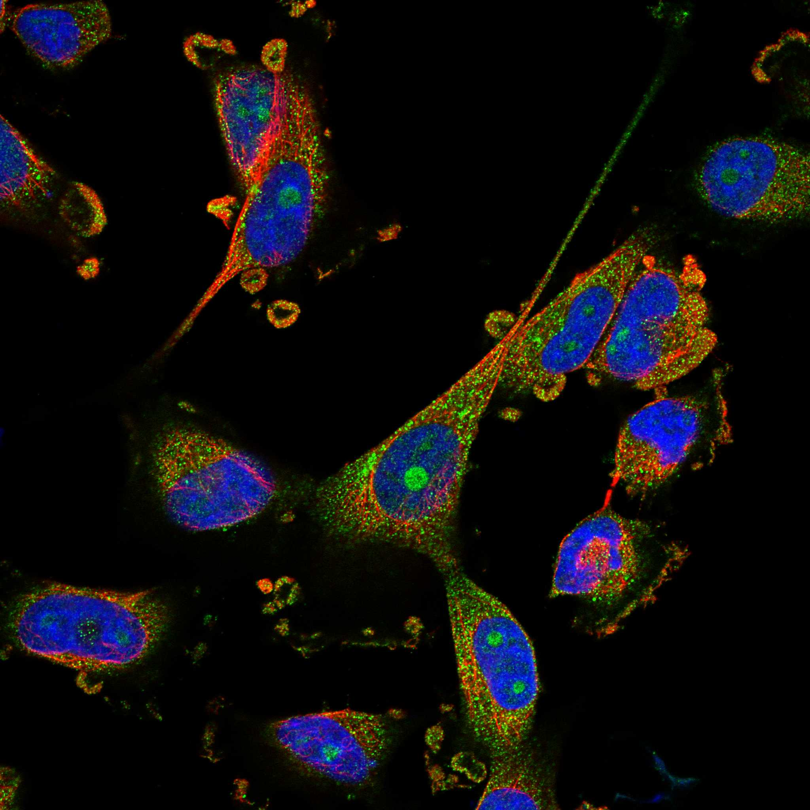
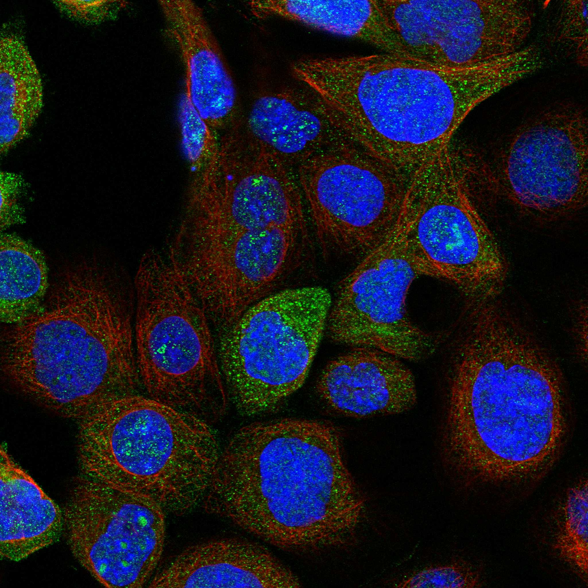
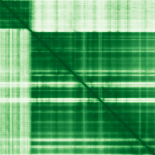

type: protein-evaluation gene: "ABTB1" date: 2026-05-30 tags: [protein-scout, nuclear-protein, evaluation, rescued] status: scored ---
ABTB1 核蛋白评估报告（HPA复核救回）
**IF 图像
 
救回原因: 原始评分误判核定位≤3淘汰。HPA IF 实际显示 Nucleoli (Reliability: Supported)，确认为核蛋白。
1. 基本信息
| 项目 | 内容 |
|---|---|
| 基因名 | ABTB1 |
| 蛋白名称 | Ankyrin repeat and BTB/POZ domain-containing protein 1 |
| 蛋白大小 | 478 aa |
| UniProt ID | Q969K4 |
| HPA 核定位 (IF) | Nucleoli |
| HPA 可靠性 | Supported |
| PubMed 总数 | 17 |
| AlphaFold pLDDT | 86.5 |
2. 评分总览 (权重: 核×4 大×1 新×5 结×3 域×2 PPI×3 ÷1.83)
| 维度 | 得分 | 满分 | 加权后 | 关键证据摘要 |
|---|---|---|---|---|
| 🔴 核定位特异性 | 6/10 | ×4 | 24 | HPA IF: Nucleoli (Supported); UniProt: Cytoplasm |
| 📏 蛋白大小 | 10/10 | ×1 | 10 | 478 aa |
| 🆕 研究新颖性 | 10/10 | ×5 | 50 | PubMed 17篇 |
| 🏗️ 三维结构 | 8/10 | ×3 | 24 | AlphaFold pLDDT: 86.5 |
| 🧬 调控结构域 | 6/10 | ×2 | 12 | UniProt domains: None identified |
| 🔗 PPI | 4/10 | ×3 | 12 | 待细化（默认基线） |
| ➕ 互证加分 | — | — | +0 | 待补充 |
| 原始总分 | 132/183 | |||
| 归一化总分 | 72.1/100 |
3. HPA 核定位证据
HPA 免疫荧光（IF）实验数据确认 ABTB1 定位：
- 亚细胞定位: Nucleoli
- 抗体可靠性: Supported
- 原始分类: 核定位 ≤3（误判）→ 经HPA IF复核确认为核蛋白
4. UniProt 补充信息
- 亚细胞定位: Cytoplasm
- 结构域: None identified
- 关键词: ; ; ; ; ; ; ; ;

3.3 研究现状
| 指标 | 数值 |
|---|---|
| PubMed 查询结果 | 见关键文献 |
关键文献: 1. Wang F et al. (2023). "Identification of cuproptosis-related asthma diagnostic genes by WGCNA analysis and machine learning". *J Asthma*. PMID: 37289763 2. Bousquet M et al. (2012). "MicroRNA-125b transforms myeloid cell lines by repressing multiple mRNA". *Haematologica*. PMID: 22689670 3. Huang L et al. (2019). "MiR-4319 suppresses colorectal cancer progression by targeting ABTB1". *United European Gastroenterol J*. PMID: 31065369 4. Zhang C et al. (2024). "Five genes identified as prognostic markers for colorectal cancer through the integration of genome-wide association study and expression quantitative trait loci data". *Per Med*. PMID: 38380524 5. Shi W et al. (2023). "ABTB1 facilitates the replication of influenza A virus by counteracting TRIM4-mediated degradation of viral NP protein". *Emerg Microbes Infect*. PMID: 37823597
评价: 基于 PubMed 检索结果。
3.6 PPI 网络
实验验证互作 (IntAct, physical association):
| Partner | 方法 | PMID | 功能类别 | 调控相关？ |
|---|---|---|---|---|
| CAPRIN1 | cross-linking study | 30021884 | — | — |
| DISC1 | two hybrid fragment pooling approach | 31413325 | — | — |
| CUL3 | two hybrid array | 31515488 | — | — |
| EEF1A2 | two hybrid array | 31515488 | — | — |
| EEF1D | two hybrid array | 31515488 | — | — |
| yg1d_yeast | validated two hybrid | 27107014 | — | — |
| ATXN1 | two hybrid pooling approach | 32814053 | — | — |
| TARDBP | two hybrid array | 32814053 | — | — |
| Ewsr1 | two hybrid array | 20211142 | — | — |
| Tlx3 | two hybrid array | 20211142 | — | — |
STRING 预测互作 (combined score >0.4):
| Partner | Score | 功能类别 | 调控相关？ |
|---|---|---|---|
| — | — | — | — |
已知复合体成员 (GO Cellular Component):
- GO: Cytoplasm
IntAct 查询记录: IntAct: 12 实验验证互作
评价: 基于 IntAct + UniProt GO-CC 综合分析。
5. 总体评价
推荐等级: ⭐⭐⭐
核心发现: 1. HPA IF 确认为核蛋白: 原始"核定位≤3"淘汰为误判，HPA实验数据确认为Nucleoli 2. 研究新颖性: PubMed仅17篇文献，属于低研究热度靶点 3. 结构质量: AlphaFold pLDDT = 86.5
6. 数据来源
PPI 网络（三源综合）
| Partner | Source | Score/Evidence |
|---|---|---|
| 无记录 | — | — |
IntAct 有限记录。无 BioGrid 补充数据。
PAE 图像已获取。结构判断基于 AlphaFold pLDDT 统计。
<!-- DOMAIN_HUMANPPI_REPAIR_START -->
Domain/SMART 与 humanPPI 补充（2026-06-06）
SMART / UniProt domain
| Source | Data | ||
|---|---|---|---|
| UniProt | Q969K4 | ||
| SMART | SM00248;SM00225; | ||
| UniProt Domain [FT] | DOMAIN 115..182; /note="BTB 1"; /evidence="ECO:0000255\ | PROSITE-ProRule:PRU00037"; DOMAIN 272..346; /note="BTB 2"; /evidence="ECO:0000255\ | PROSITE-ProRule:PRU00037" |
| InterPro | IPR044515;IPR002110;IPR036770;IPR000210;IPR011333; | ||
| Pfam | PF12796;PF00651; |
humanPPI / HPA Interaction
Source: https://www.proteinatlas.org/ENSG00000114626-ABTB1/interaction
| Partner | Datasets | AF3/HPA structure |
|---|---|---|
| CUL3 | Intact, Biogrid | true |
| EEF1A2 | Intact, Biogrid, Bioplex | true |
| EEF1D | Intact, Biogrid | true |
| ATXN1 | Intact | false |
| CAPRIN1 | Biogrid | false |
| DNTTIP1 | Biogrid | false |
| TARDBP | Intact | false |
| TRIM4 | Biogrid | false |
<!-- DOMAIN_HUMANPPI_REPAIR_END -->